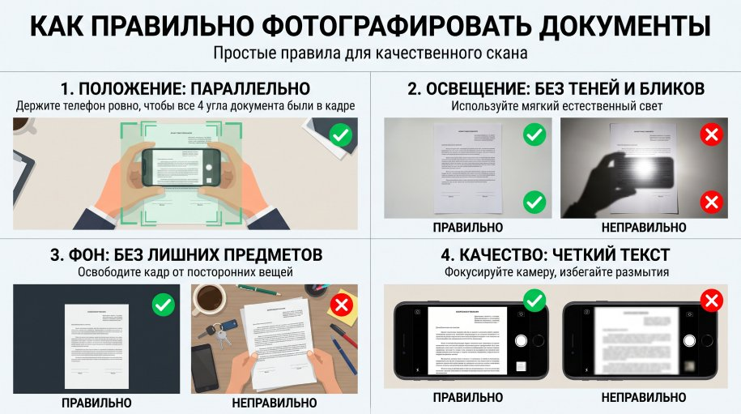
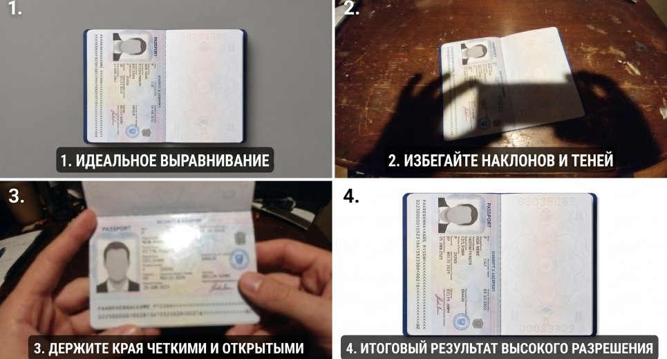
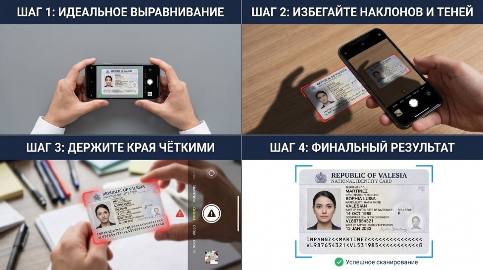
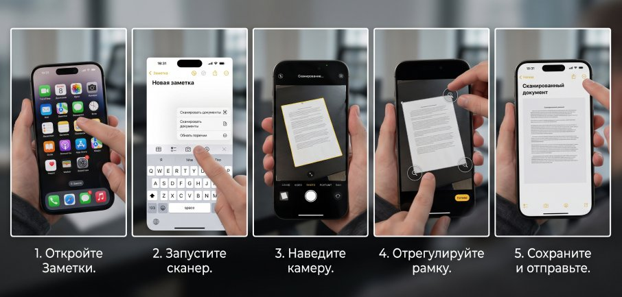
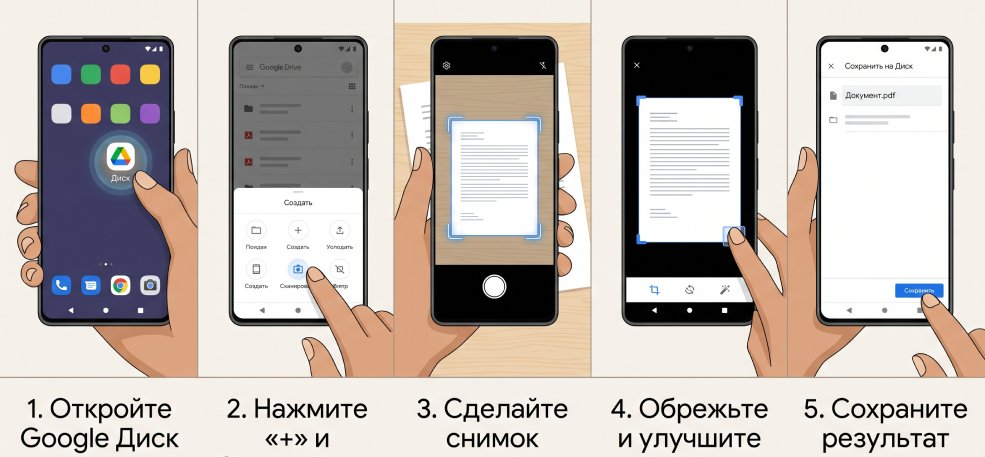
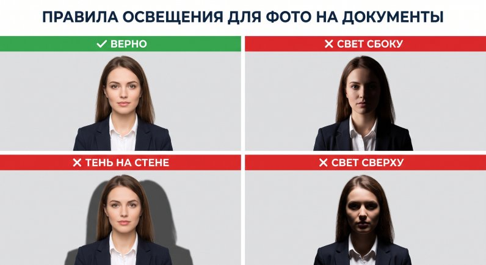

Как правильно фотографировать и сканировать документы
Эта инструкция поможет вам правильно сфотографировать или отсканировать документы — паспорт, свидетельства, справки о регистрации и другие, — чтобы наши специалисты могли быстро и без задержек их обработать.
Общие требования
Соблюдение этих правил — залог того, что документ будет принят с первого раза и не потребует повторной съёмки.
- Документ должен лежать на ровной однотонной поверхности (белый или тёмный однотонный стол, лист бумаги).
- Снимайте при дневном свете или хорошем искусственном освещении, без резких теней.
- Камера должна находиться строго сверху, параллельно документу — без перспективных искажений.
- В кадре — только документ, полностью, включая все края и углы.
- Текст должен быть чётким и читаемым, без размытия.
- Если документ состоит из нескольких страниц — фотографируйте каждую страницу отдельно.
- Паспорт: снимайте разворот с фото и данными полностью, без обрезки.


Чего не должно быть на фото
Проверьте кадр перед отправкой — наличие любого из перечисленного ниже может стать причиной повторной съёмки.
- Посторонних предметов в кадре: рук, пальцев, телефона, ручки, чашки и т. д.
- Ножек стола, краёв мебели, пола, стен — ничего, кроме поверхности под документом и самого документа.
- Бликов от вспышки или света на поверхности документа.
- Наклонного угла съёмки или перспективных искажений — документ должен выглядеть прямоугольным, без «заваленных» краёв.
- Обрезанных краёв или углов документа.
- Тени от руки, телефона или головы на документе.
- Размытого или нечёткого изображения.
Как неправильно
- Документ сфотографирован под углом или с искажением.
- В кадре видна часть стола, ножки стола, руки или другие предметы.
- Присутствуют тени или блики, закрывающие часть текста.
- Изображение размытое, часть текста нечитаема.
- Часть документа обрезана или не попала в кадр.

Как сделать скан документа на iPhone
В экосистеме iOS есть встроенный и очень мощный инструмент для сканирования, поэтому сторонние приложения скачивать не обязательно.
Откройте «Заметки»
Создайте новую заметку или откройте уже существующую, куда хотите прикрепить документ.
Запустите сканер
Нажмите на иконку камеры в панели инструментов над клавиатурой и выберите «Сканировать документы».
Наведите камеру
Положите документ на контрастную ровную поверхность. Камера сама определит границы и сделает снимок — либо нажмите затвор вручную.
Отрегулируйте рамку
Перетяните уголки рамки пальцем, чтобы захватить только нужную область, и нажмите «Оставить снимок».
Сохраните и отправьте
Нажмите «Сохранить», затем поделитесь сканом в «Файлы» или «Фото» в нужном разрешении.

Как сделать скан документа на Android
На устройствах Android самым удобным, популярным и качественным инструментом является приложение Google Диск (Google Drive), которое установлено почти на каждом смартфоне.
Откройте Google Диск
Убедитесь, что вы вошли в свой аккаунт Google.
Запустите сканирование
В правом нижнем углу нажмите «+» (Создать), затем выберите иконку «Сканировать».
Сделайте снимок
Наведите камеру на документ при хорошем освещении, чтобы избежать теней, и нажмите кнопку затвора.
Отредактируйте
Нажмите «Обрезать», чтобы скорректировать границы, и выберите режим «Цвет» для контраста текста.
Сохраните результат
Нажмите «Готово», затем «Сохранить» — документ сохранится на Google Диск в формате PDF.

Правила освещения
Чтобы ваша фотография для документов прошла все официальные требования (например, для паспорта или визы), важно правильно настроить свет и избежать типичных ошибок.
✓ Правильный вариант
- Освещение: равномерное и мягкое. Лицо освещено с обеих сторон одинаково, без резких переходов.
- Фон: светлый, чистый и однородный (идеально белый или светло-серый).
- Тени: на лице и на фоне за вами полностью отсутствуют.
✕ Ошибки, которых следует избегать
В чём проблема: свет падает только с одной стороны — одна щека и половина лица получаются в тени.
Как исправить: используйте два источника света по бокам или встаньте лицом к большому окну.
В чём проблема: источник света слишком близко или сбоку — на фоне чётко видна ваша тень.
Как исправить: отойдите от стены хотя бы на 50–100 см, чтобы тень падала далеко назад.
В чём проблема: свет падает строго сверху или сзади — тёмные круги под глазами, тень под носом.
Как исправить: уберите верхний прямой свет, источник должен быть на уровне лица, напротив глаз.

Остались вопросы по оформлению документов?
Специалисты Feldbusch & Partner готовы проконсультировать вас на каждом этапе — от подготовки документов до финального решения.
Связаться с нами